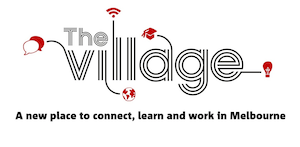

Welcome to
International NodeBots Day 2014
Melbourne

NBD Melbourne, 2013
NBD Brisbane, 2013
International NodeBots Day

Play, Learn, Build
Schedule
- 10:30 Up, running and building
- 10:30 Electronics intro with Hadi
- 12:30 Lunch, courtesy of PaperCut
- 13:00 More building
- 13:00 Breakout sessions
- 14:00 Soccer / SumoBots
- 15:00 Afternoon tea
- 15:15 Show and tell
- 16:00 Finish up
Team
-
 Andrew Fisher
Andrew Fisher
- Andy Gelme
- Hadi Michael
- Andrey Sidorov
- Shristi Sharma
- John Spencer
-
 Mark Wolfe
Mark Wolfe
Get Social
Twitter: #NodeBotsDay @NodeBotsAU
Chat: gitter.im/nodebots/nodebotsday
Video: Google+ Hangout +NodeBotsDay (bit.ly/nbdgplus)
IRC: #nodebotsau
WiFi
nab village wifi[1-5]
ilovethevillage
Local Sponsors

Sponsors
Discounts

Resources
github.com/rwaldron/johnny-five
github.com/nodebotsau/simplebot